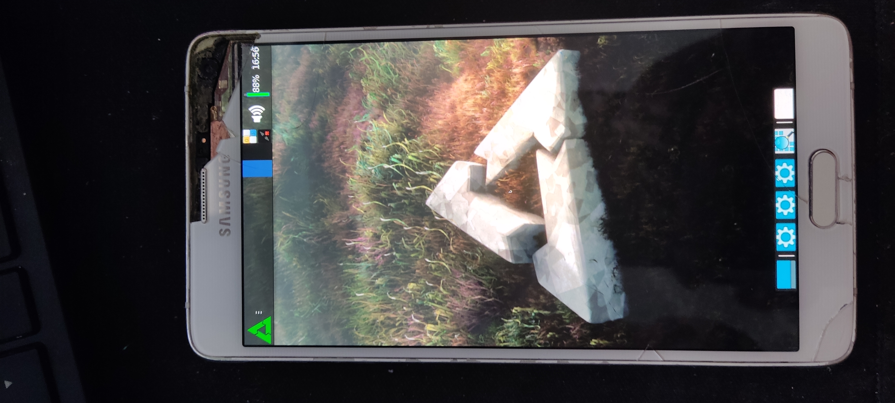

Samsung Galaxy Note 4 (samsung-treltexx)
|
 Samsung Galaxy Note 4 | |
| Manufacturer | Samsung |
|---|---|
| Name | Galaxy Note 4 |
| Codename | samsung-treltexx |
| Released | 2014 |
| Category | testing |
| Original software | Android 4.4.4 (KitKat) |
| Hardware | |
| Chipset | Samsung Exynos 5433 Octa |
| CPU | Octa-core (4x 1.3 GHz Cortex-A53 & 4x 1.9 GHz Cortex-A57) |
| GPU | Mali-T760 MP6 |
| Display | 1440 x 2560 Super AMOLED |
| Storage | 32 GB |
| Memory | 3 GB |
| Architecture | armv7 |
{kind=link}
| USB Networking |
Works
|
|---|---|
| Flashing |
Works
|
| Touchscreen |
Works
|
| Display |
Works
|
| WiFi |
Broken
|
| FDE | |
| Mainline | |
| Battery |
Works
|
| 3D Acceleration | |
| Audio |
Broken
|
| Bluetooth |
Broken
|
| Camera | |
| GPS | |
| Mobile data | |
| SMS | |
| Calls | |
| USB OTG | |
| NFC | |
| Accelerometer | |
|---|---|
| Magnetometer | |
| Ambient Light | |
| Proximity | |
| Hall Effect | |
| Barometer | |
| Power Sensor | |
| Camera Flash | |
|---|---|
| Keyboard | |
| Touchpad | |
| USB-A | |
| HDMI/DP | |
| Ir TX | |
| Ir RX | |
| Stylus | |
| Haptics | |
| Ethernet | |
| FOSS bootloader | |
| Please note that this page is about the models with Exynos chipset SM-N910C/H/K/L/S/U. The Note 4 variants with Snapdragon 805 has codename trltexx. |
There is a port for this device but it's on merge request.
Contributors
- djyee(furkanguzel161)
Users owning this device
- Menelkir
- Revolutionary
- Sweptdev (Notes: model: SM-N910C)
- TPJS (Notes: running Lineage-OS)
How to enter flash mode
Press and hold Volume Down + Home + Power simultaneously. Then click Volume Up to confirm.
Mainline
The device on the mainline kernel is the "Samsung TM2" and "Samsung TM2e". The TM2 is the Samsung Tizen reference device, and TM mean Tizen Mobile. These devices uses a "special" 64bit version of sboot (or at least the arm trustzone firmware) to be able to boot arm64 kernels. All other phones and tablets with exynos5433 has 32bit sboot, and cannot boot a 64bit kernel. Unfortunately there seem to exist few tm2/tm2e device in the world, and firmware files for them does not seem to be downloadable anywhere. To have any chance to boot an arm64 mainline kernel on treltexx and other exynos5433 devices we would need to get our hands on these firmware files, or in some other way create 64bit sboot/trustzone firmware for exynos5433.
See these chat logs for relevant discussions:
Tm2 and tm2e uses u-boot rather than Samsungs proprietary variant. There was a patch sent to the u-boot project to add support for it, but it was not accepted in the sent form: U-Boot support patch. Booting u-boot should, in theory, be possible by flashing it to the BOOT partition, to which android's boot.img is normally flashed.
UART
A "standard" serial debugging cable with 619 kOhm works for tre3calte (and other exynos5433 devices). The bootloader prints lots of output during boot, but for some reason the kernel is quiet, even if the console parameter is changed. A patch similar to the one found here for Galaxy S7 might be necessary to get any live kernel output.
See also
- pmaports!3285 Initial merge request